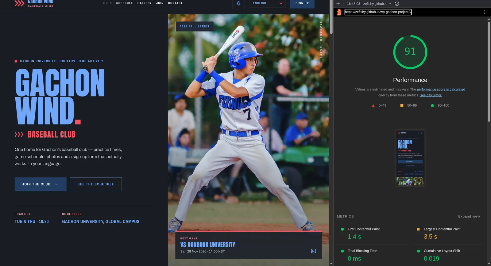
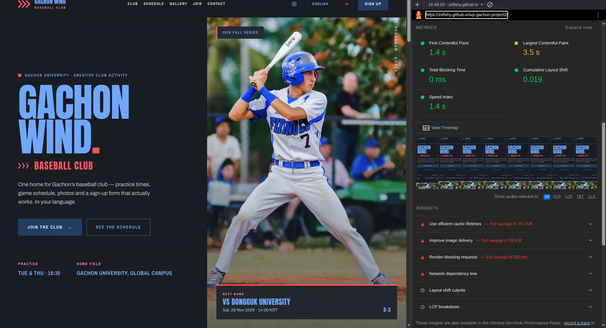
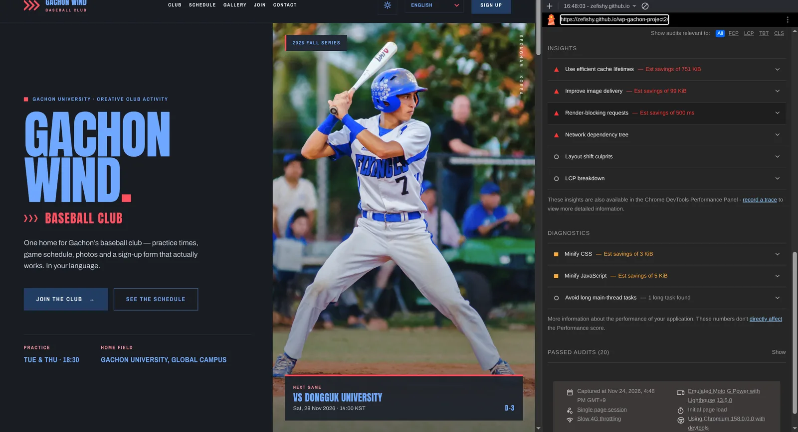
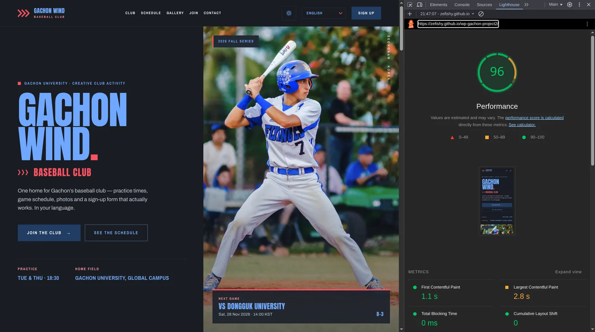
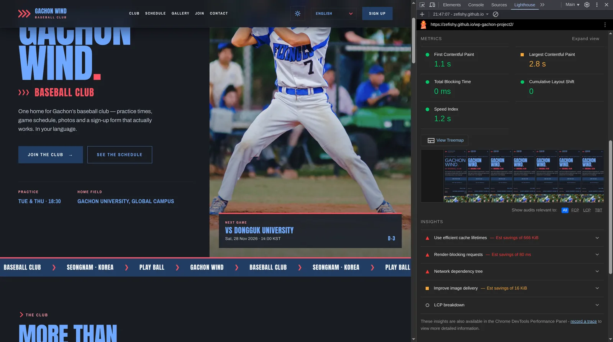
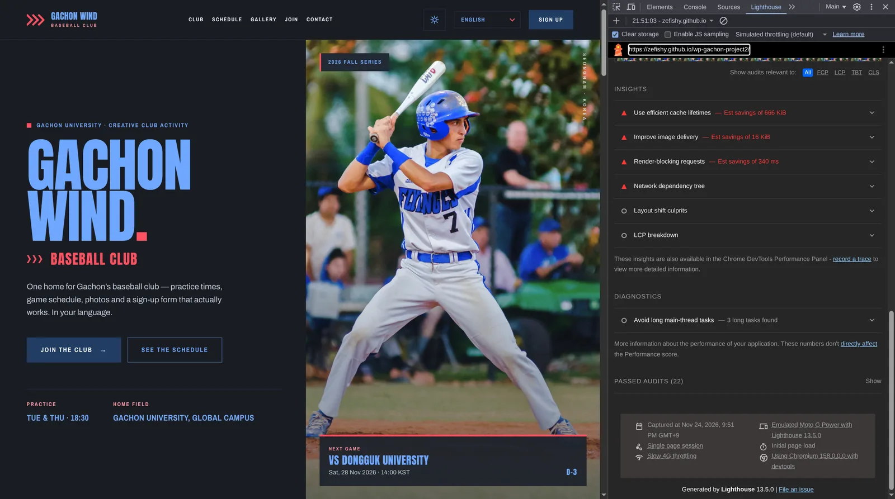

Week 9_2 — Performance Audit
I ran Lighthouse (Performance, Mobile) on our team project, the GACHON WIND baseball club homepage, fixed the three things the report flagged that I could change, and ran it again.
The homework
Optimize your personal site and post the result to your page.
Performance slides — Summary & Homework
- Run Lighthouse and screenshot your Performance score.
- Apply at least 3 optimizations from the lecture.
- Re-run Lighthouse and screenshot the new score.
- Post both screenshots to your page with a 2-sentence description of what you changed.
What I changed, in two sentences
I gave the hero photo a smaller 800-pixel WebP version with
srcset, so phones download 65 KB instead of the
152 KB original, and switched the page to minified copies of
its CSS and JavaScript. The Performance score went from 91 to 96 and
Largest Contentful Paint from 3.5 s to 2.8 s.
Before
Audited page: zefishy.github.io/wp-gachon-project2 (source on GitHub). Chrome DevTools, Lighthouse tab, Performance, Mobile, in a private window so browser extensions didn’t affect the result.






All three before captures come from the same run, 24 Nov 2026 at 16:48.
The three optimizations
1. A correctly sized hero image
“Improve image delivery” pointed at the hero photo: a
1200×1500 WebP shown at about 721×901 on the test
phone. I made an 800×1000 copy and let the browser choose
with srcset and sizes. The photo is also
the Largest Contentful Paint element, so this is the change that
moved LCP.
<!-- before: 152,238 bytes on every screen -->
<img src="static/img/hero-batter.webp" width="1200" height="1500"
fetchpriority="high" alt="...">
<!-- after: 65,132 bytes on phones -->
<img src="static/img/hero-batter-800.webp"
srcset="static/img/hero-batter-800.webp 800w,
static/img/hero-batter.webp 1200w"
sizes="(max-width: 1024px) 100vw, 50vw"
width="1200" height="1500" fetchpriority="high" alt="...">2. Minified CSS
I generated css/style.min.css with esbuild and pointed
the page at it. The readable style.css stays in the
repo for editing. Size went from 67,904 to 52,825 bytes, or 13,658
to 10,563 bytes after gzip, which is what GitHub Pages actually
sends. The stylesheet is the page’s only render-blocking file,
so making it smaller also helps first paint.
3. Minified JavaScript
Same approach for the two scripts: main.js went from
41,036 to 22,166 bytes and i18n.js from 51,248 to
45,421 bytes. The dictionary file shrinks less because most of it
is translation text, which can’t be minified.
<link rel="stylesheet" href="css/style.min.css">
...
<script src="js/i18n.min.js"></script>
<script src="js/main.min.js"></script>All three changes are commit 0e891c4 in wp-gachon-project2.
After






The score and metrics captures are from the 21:47 run. The insights capture is from a second run at 21:51, so its render-blocking estimate (340 ms) comes from a different run than the score.
What’s still flagged
-
Image delivery, 16 KiB. My DevTools window
was 1056 px wide, wider than the
sizesbreakpoint, so the browser picked the 1200 px original. The saving went from 99 KiB to 16 KiB, but the warning isn’t fully gone. -
Cache lifetimes. GitHub Pages sets
Cache-Control: max-age=600on every file, and a static Pages site can’t change its headers. - Render-blocking request. The stylesheet still blocks first paint. Fixing that would mean inlining the above-the-fold CSS, which I left for later.